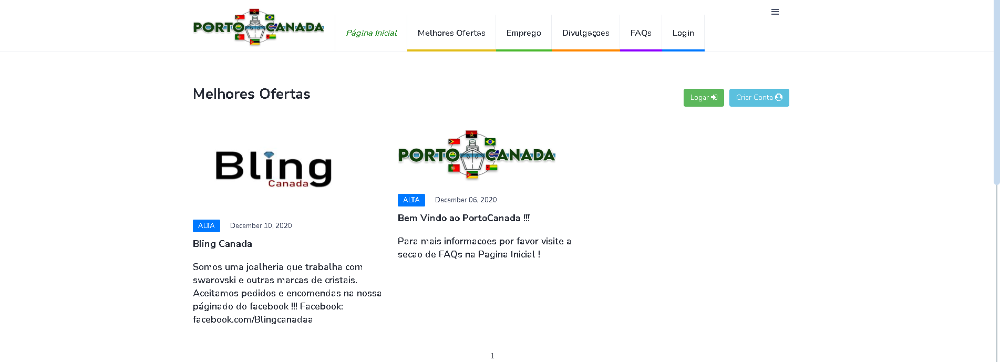

Forum
PortoCanada was made with the main focus to unite and help portuguese
speaker people that live in Canada.
Immigration can be hard sometimes to adapt to, that is why a place
where people can get some guidance and help each other is so
important, it may save a lot of time and change people life by letting
them know what they weren't aware of.
The website is already deployed and working at portocanada.com
Technologies:
- - Python
- - Django
- - Linode